Available Works

A Walk on the Beach
Media Type: Giclee on CanvasAmong Friends
Media Type: Giclee on Canvas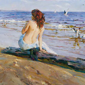
Beauty on the Shore
Media Type: Giclee on CanvasBoy with an Orange
Media Type: Giclee on CanvasBreaking Free
Media Type: Giclee on CanvasBy the Shore
Media Type: Giclee on CanvasCherished Roses
Media Type: Giclee on CanvasDreaming of Love
Media Type: Giclee on CanvasEn Vogue
Media Type: Giclee Embellished on Hand-textured CanvasGarden Treasures
Media Type: Giclee on CanvasGuitar Play
Media Type: Giclee on Canvas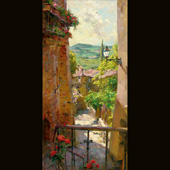
Heart of the Village
Media Type: Giclee on CanvasHugs for Minnie
Media Type: Giclee on Canvas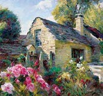
La Maison de Provence
Media Type: Giclee on CanvasLost in Lilies
Media Type: Giclee on Canvas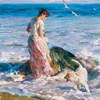
Moment in the Sun
Media Type: Giclee on CanvasMorning Beauty
Media Type: Giclee on Canvas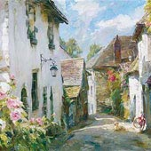
Morning in Provence
Media Type: Giclee on Canvas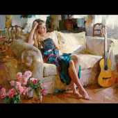
Music in the Afternoon
Media Type: Embellished Giclee on Hand-Textured Canvas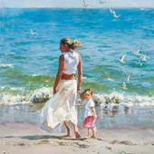
Ocean for Two
Media Type: Giclee on Canvas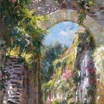
Old Town
Media Type: Giclee on Canvas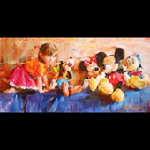
Party of Five
Media Type: Embellished Giclee on Hand-Textured Canvas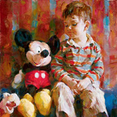
Playtime Pals
Media Type: Giclee on Canvas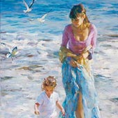
Precious Moment
Media Type: Embellished Giclee on CanvasQuiet Moment
Media Type: Giclee on CanvasReady for Romance
Media Type: Giclee on CanvasSilent Thought
Media Type: Giclee on CanvasSleeping Beauty
Media Type: Giclee on Canvas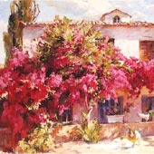
Summer in the Country
Media Type: Giclee on CanvasTimeless Beauty
Media Type: Giclee on CanvasToes in the Sand
Media Type: Giclee on CanvasWaiting for Love
Media Type: Giclee on Canvas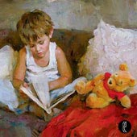